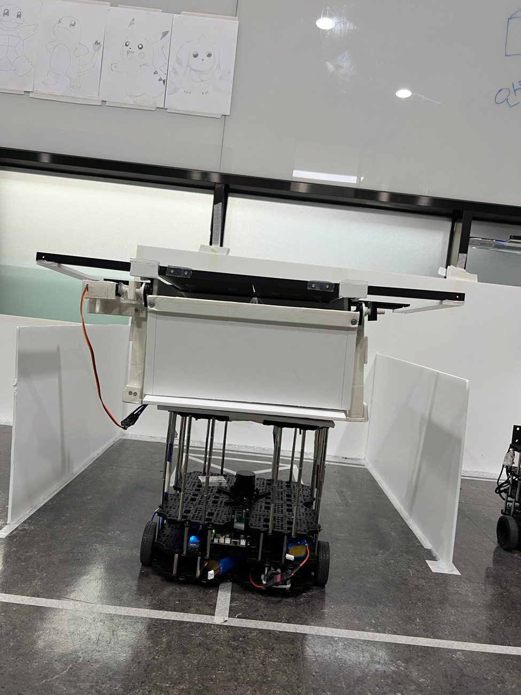
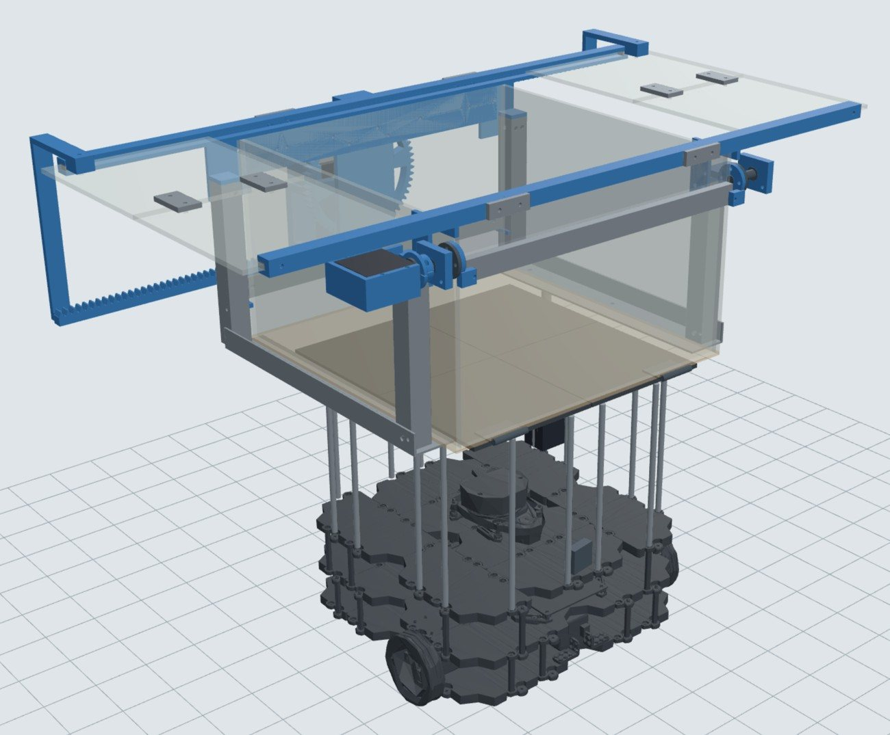
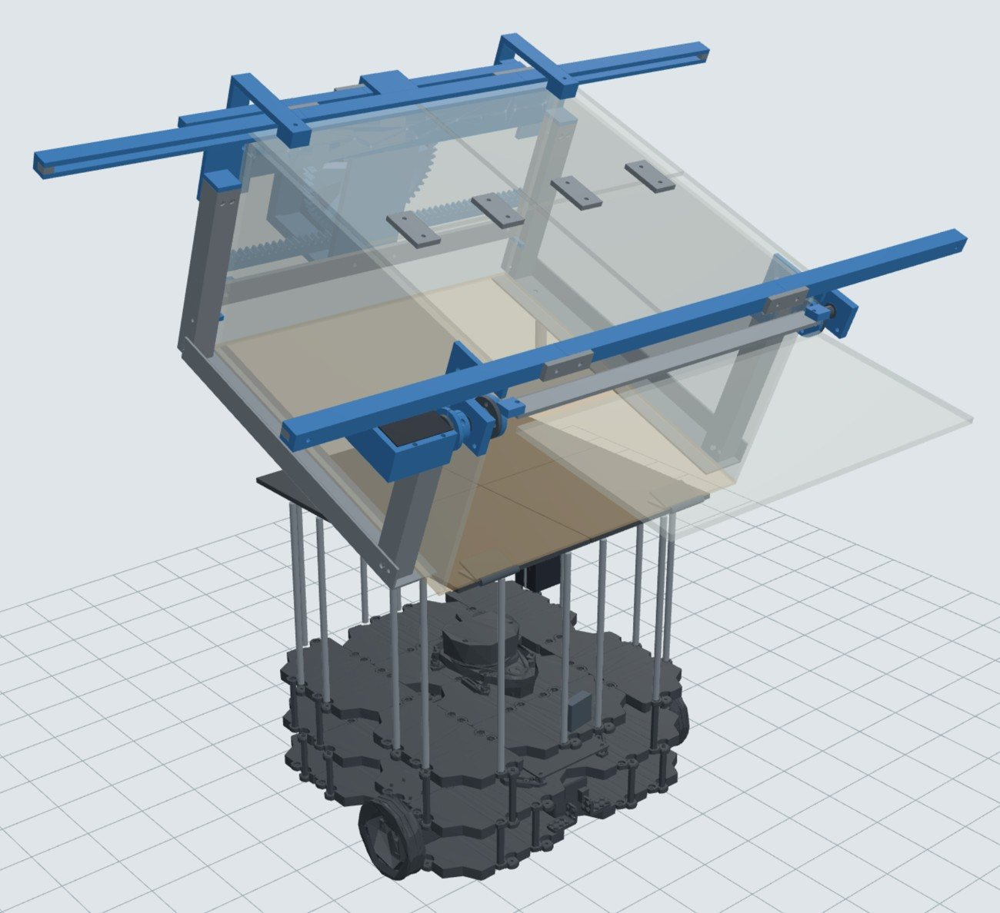
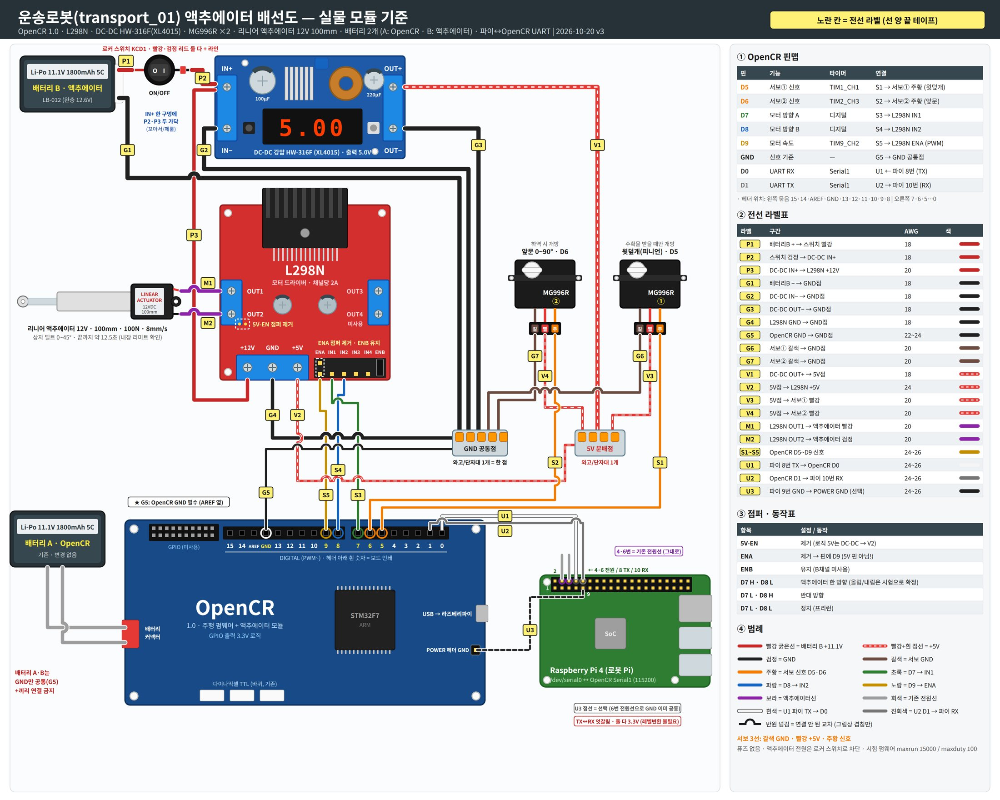

PROJECT 01 / AUTONOMOUS MOBILE ROBOT
통합 시험 단계
ROS 2 JazzyNav2Python · rclpy
ArUco · LiDAROpenCR · Arduino C++TurtleBot3
스마트팜 운송로봇 — 주행 · 정밀 도킹 · 바구니 구동부
예찰 → 수확 → 운송 → 선별로 이어지는 스마트팜 다중 로봇 시스템(ManyFarm)에서, 수확로봇에게 파프리카를 받아 선별장까지 옮겨 쏟는 운송로봇 transport_01을 맡았습니다.
- 목표
- 운송로봇 한 대가 주행 → 정밀 도킹 → 받기 · 쏟기까지 실물에서 동작하게 만들기.
- 내 역할
- 운송로봇 공동 담당 — 9/10–10/12 주행 · 정밀 도킹(요구사항 · FSM 설계, Nav2 주행, ArUco + LiDAR 도킹, 팀 라우트서버 연동) · 10/13~ 바구니 구동부(기구 제작, 전원 · 배선, OpenCR 펌웨어, ROS 2 브리지 노드, URDF 실물 반영)
- 팀 구성
- 7인 팀 · KDT 로봇 3기 최종 프로젝트 · 2026.09 ~ 2026.11 · 10/14 이후 주행 · 도킹은 팀원이 이어받음
- 플랫폼
- TurtleBot3 Waffle Pi (Raspberry Pi 4, OpenCR 1.0, LiDAR, Pi 카메라 V2) + 직접 만든 적재 바구니



A. 주행 · 정밀 도킹 (9/10 – 10/12)
- SEARCH회전하며 마커 탐색
- TRACK먼 마커로 접근
- FINE가까운 마커로 정지
- ALIGNLiDAR 면 정렬
- PUSH · DONE짧게 직진 후 완료
- 설계요구사항 · 기능 · 비기능 · 인터페이스 · 개발 단계 · State 설계 문서 6종 작성. 미션 FSM은 정상 9개 State + 전역 ERROR/ESTOP, Nav2와 정밀 제어기의 제어권을 하나로.
- 주행폐쇄망 TurtleBot3를 실물에서 달리게 만듦 — 시계 동기화, 바구니 기둥을 지우는 LiDAR 필터, 최대 속도 0.13 m/s 제한. SD 카드 무인 설치 스크립트(13단계, 이미 된 단계는 건너뜀).
- 인식Pi 카메라(IMX219) 1280×720 캘리브레이션, 마커 크기별 인식 거리 실측 (10 cm 마커 0.3–2 m). 근거리에서 마커가 화면을 넘치는 한계 때문에 장소마다 마커 2개 — 먼 마커로 방향, 가까운 마커로 정지.
- 도킹dock.py 하나로 주차장 · 수확로봇 · 선별장을 처리하고 장소 값은 sites.yaml로 분리. 마지막 각도는 카메라 대신 LiDAR로 정면 면의 기울기를 재서 맞추고, 정렬 후 직진 · 후진 이탈(UNDOCK)까지.
- 검증실물 1회차 실패(접근 중 마커 놓침)를 분석한 뒤, 가상 카메라(투영 + 노이즈 + 지연 + 바퀴 편차) 폐루프 시뮬레이터를 만들어 시작 위치 7종으로 반복 검증하고 재설계.
- 연동팀 라우트서버(수정 없이 사용) 위에 운영 스크립트(
wf이동 · 도킹 · 이탈) 작성, DDS IP 직접 지정, Pi 4 부하 감소. 10/9 설치 스크립트 포함 인수인계 패키지로 전달.
B. 바구니 구동부 (10/13 ~) — 받기 · 운반 · 쏟기
- 기구팀 CAD를 바탕으로 출력 부품을 19 → 10개로 합치고, 축 구멍을 Ø8.4로 키워 미끄럼 베어링 역할. 윗덮개(랙 · 피니언 슬라이드) · 앞문 · 틸트 3개 구동부 조립. 틸트 모터 배송 지연 → 같은 배선으로 12V 리니어 액추에이터로 교체.
- 전원기구 전용 배터리를 분리해 서보 · 리니어 전류가 OpenCR · 라즈베리파이 전원을 흔들지 않게 설계. DC-DC 5V, L298N, GND 한 점 공통, 로커 스위치로 기구 전원만 차단. 배선도 v1 → v3, 전선 라벨 체계.
- 펌웨어TB3 순정 주행 펌웨어 위에 액추에이터 모듈을 얹은 통합 펌웨어 — OpenCR 한 장으로 주행 + 기구.
delay()없는 millis 상태머신, USB는 주행이 쓰고 기구 명령은 UART로 분리, 회신 규칙 OK(접수) · DONE(완료) · STOPPED · ERR · READY. - 제어서보가 360° 연속회전형으로 확인돼 위치 대신 시간 제어로 전환. 덮개는 문틀에 끼어 전진 0.1 s / 후진 0.05 s 끊어치기, 틸트는 내림을 1 s 길게 잡아 매번 바닥 리미트로 기준점 복귀. 동작마다 시간 상한 + 강제 정지.
- ROS 2브리지 노드
transport_device_bridge— 서비스 6개 (lid_open/close·gate_open/close·unload·stop), 동작이 끝나야 응답. 실패 시 stop 후 이유와 함께 실패 반환. 운송 노드는 서비스 호출만 하면 됨. - 모델틸트 · 앞문 각도, 경첩 높이, 카메라 위치(9° 틀어짐) 등을 실측해 실물 반영 URDF 작성 — 기둥이 LiDAR를 가리는 것까지 시뮬레이션에서 재현하기 위함.

검증 · 결과
- 기구가 움직이는 동안에도 주행 통신 유지 — 약 68초 동작 중 /odom 평균 20.0 Hz, 최대 간격 0.064 s (실물, 10/23)
- 덮개 · 앞문 5회 반복 완전 개폐, 비상 정지 즉시 정지, 내용물 넣고 적재 쏟기 통과 (실물)
- 브리지 노드 사전 시험 16/16, 로봇에서 실제 서비스 호출 통과
- 폐쇄망 Nav2 주행, 주차장 도킹 동작 확인 (실물)
- 도킹 정밀도는 오프라인 시뮬레이터 값 — 선별장 좌우 ±1.4 cm, 수확로봇 ±0.6 cm. 실물 반복 성공률은 측정하지 않아 쓰지 않음
트러블슈팅
- Nav2가 목표를 거절 — 폐쇄망이라 로봇 시계가 부팅마다 약 20일 틀어져 TF 시각 무효 → PC를 시간 서버로, bringup에 시계 동기화
- 도킹 각도 오차 — 마커만 보면 시뮬레이션에서도 최대 ±11°, 카메라도 약 8° 틀어져 장착 → 마지막 각도는 LiDAR 면 정렬로 분리
- 서보가 멈추지 않음 — 라벨로 구분 안 되는 360° 연속회전형 → 손으로 돌려 확인 후 시간 제어 펌웨어로 변경
- UART 무반응 · 업로드 CRC Fail — 라즈베리파이 시리얼 콘솔이 포트 점유 → 해제. 업로드 실패는 순정 업로더로 보드부터 확인 후 1.5 KB 줄여 해결
- 바구니 기둥이 장애물로 잡힘 — 0.20 m 미만 점 제거 필터, AMCL · costmap · 충돌 감시를 같은 토픽으로 통일
- PC · 로봇 통신 실패 — 공유기가 멀티캐스트 차단 → Fast DDS에 IP 직접 지정
협업 범위
관제 · 라우트서버 · Zenoh 연결은 팀 코드이며 수정 없이 그 위에 얹었습니다. 10/14 이후 주행 · 도킹과 FSM 변경은 팀원이 이어받았고,
운송 미션 노드 · 관제와의 통합 시험은 팀과 함께 진행 중입니다.
배운 점
실물은 시뮬레이션에 없던 문제로 막힙니다. 그때마다 한 번에 하나만 바꾸고, 순정 펌웨어 · 닫힌 위치 같은 정상 기준으로 먼저 되돌려 원인을 좁혔습니다. 경계를 나누는 설계(주행은 USB, 기구는 UART · 운송 노드는 서비스만, 시리얼은 브리지가)가 디버깅과 협업을 쉽게 만들었고, 실물 · 시뮬레이션 · 미검증을 구분해 말하는 습관이 팀과 발표의 신뢰를 지켰습니다.